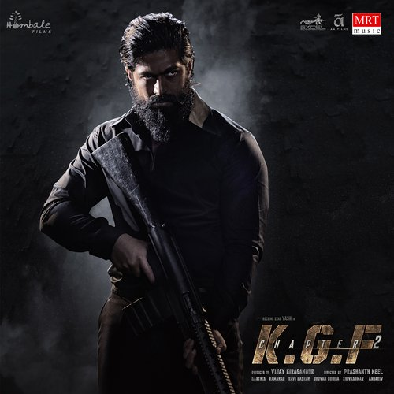
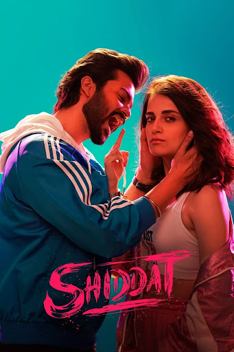
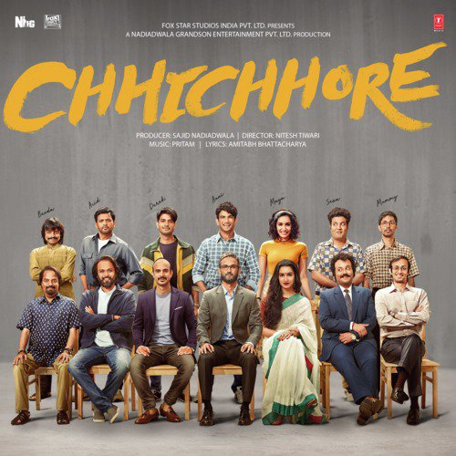
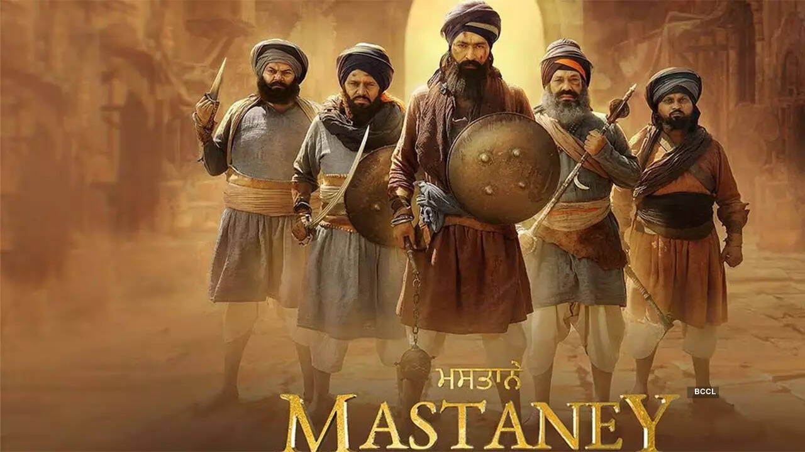

Driven by an intense and obsessive love, a young man embarks on a perilous, illegal journey across continents to stop the wedding of the woman he desires.

A father reunites with his college friends to recount their days as campus "losers" in order to inspire hope in his critically injured teenage son
A young couple experiences terrifying supernatural occurrences after their vintage porcelain doll is possessed by a malevolent entity following a home invasion by satanic cultists

Hired to impersonate elusive Sikh warriors to appease a ruthless invader, five ordinary men undergo a profound transformation and ultimately embody the legendary bravery of the heroes they were pretending to be.